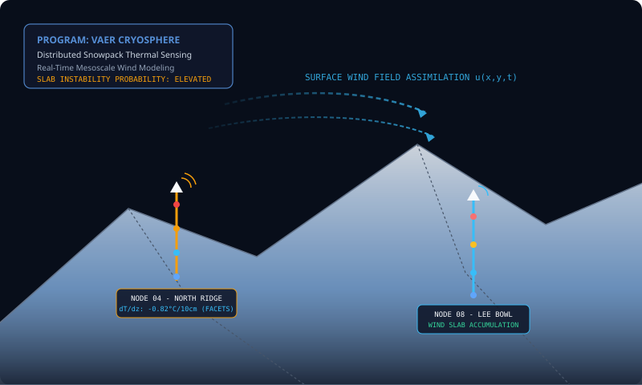
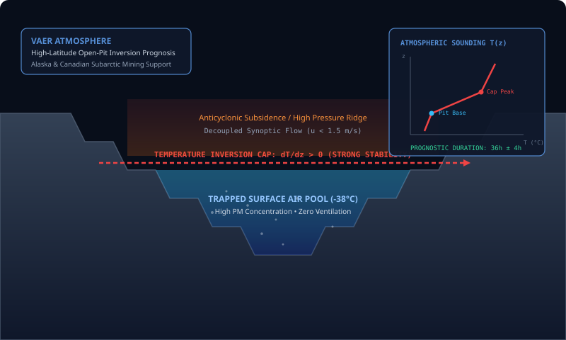
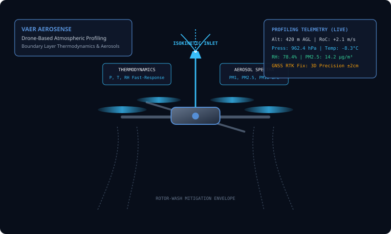

Initial Technology Programs
Targeted initiatives where integrating custom sensing hardware, computational physics, and predictive models solves immediate, high-stakes environmental operational challenges.
Snowpack Sensing & Avalanche Decision Support
Developing an autonomous snowpack temperature-sensing architecture with rugged real-time communications for high-angle mountain terrain.
The Operational Challenge
Traditional avalanche forecasting relies heavily on manual snowpit digging and sparse automated weather stations located in accessible, flat pass areas. Avalanche starting zones and steep ridgelines remain unmonitored.
Weak layer formation—specifically kinetic facet growth and depth hoar—is driven by strong vertical temperature gradients (greater than 10°C/m) within the snowpack. When combined with severe wind loading on lee slopes, catastrophic slab failures occur without warning.

Distributed Sensor Probes
Multi-thermistor probes installed at starting zones. Automatically tracks snow accumulation, internal temperature gradients, and basal heat fluxes with 0.05°C differential sensitivity.
Ridge-Wind Assimilation
High-resolution terrain-conforming CFD simulates surface-wind fields over complex topography, predicting slab mass deposition rates and lee-slope loading in near-real-time.
Forecaster Interface
Web-based decision support tool showing weak-layer evolution, load accumulation, and uncertainty bounds to inform road closure, rail safety, and explosive mitigation timing.
Winter Temperature Inversion Prognosis
Encoding domain atmospheric physics of surface-based temperature inversion layers and anticyclonic conditions into an operational prognostic engine for open-pit mines in Alaska and Canada.

Anticyclonic Subsidence & Cold Air Pools
Open-pit mines in the subarctic experience severe winter inversions where surface air cools rapidly to -40°C or colder under cloudless skies, while a descending warm air cap forms aloft (dT/dz > 0).
This thermal lid decouples the pit basin from upper winds. Heavy equipment exhaust (NOx, SOx, PM2.5) accumulates to hazardous levels, causing emergency haul-fleet stoppages that cost millions per day.
- • Predictive Ingestion: Radiative cooling flux, regional barometric pressure, upper-air synoptic soundings, and in-pit boundary temperatures.
- • Prognostic Output: Likelihood of inversion formation, cap height, stagnation index, and expected duration in hours with calibrated uncertainty intervals.
- • Operational Outcome: Proactive mine shift planning, optimized blasting schedules, and protected workforce respiratory health.
Pit Microclimate Modeling
Resolving drainage flows along benches, shade shadows, and mechanical exhaust accumulation within complex open-pit geometry.
Historical Calibration
Benchmarked and calibrated against multi-year historical shutdown archives from major subarctic open-pit operations across Alaska and the Yukon.
Dispatch Integration
Delivers automated alert feeds directly into mine dispatch systems to throttle or re-route haul fleets before air quality triggers mandatory emergency stops.
Drone-Based Atmospheric & Aerosol Sensing
A ruggedized drone-mounted measurement package combining thermodynamic sounding sensors with multi-bin optical aerosol characterization.
Overcoming Airborne Rotor-Wash Effects
Multi-rotor unmanned aerial vehicles generate severe turbulent downwash, compressional thermal heating, and localized particulate shearing that ruin standard ambient sensor measurements.
VAER AeroSense solves this through computational fluid dynamics (CFD) designed forward-sampling booms and isokinetic inlets that aspirate undisturbed streamlines ahead of the rotor disturbance field during vertical ascent.

Sub-Second Synchronization
All particulate counts, thermodynamic variables, and altitude readings are synchronized to GNSS RTK positioning at 10Hz for 3D volumetric mapping.
Sub-Zero Heated Inlets
Intelligent inlet de-icing prevents rime freezing without altering the thermodynamic sample temperature or vaporizing volatile aerosols.
Autonomous Profiling
Pre-programmed vertical ascending soundings from 0 to 1,500m AGL, uploading profiles directly to the VAER Compute numerical assimilation engine upon landing.